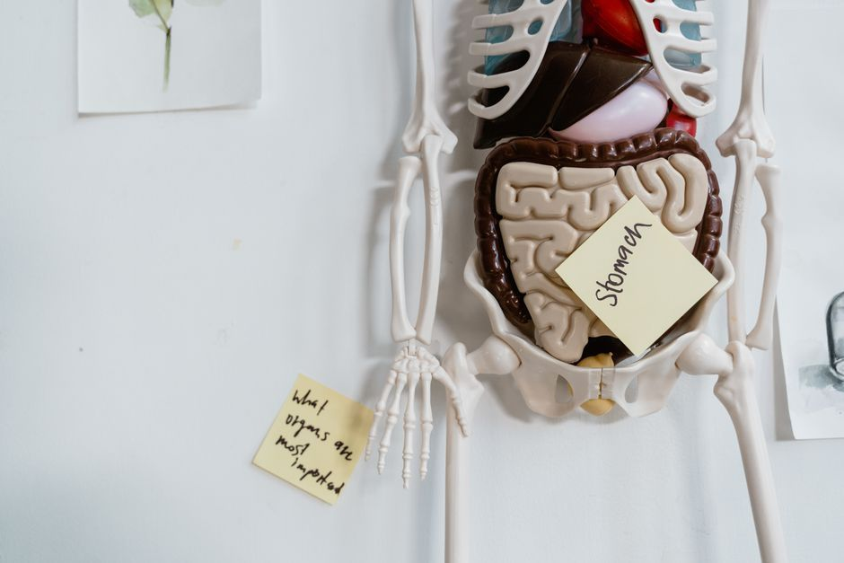

Gut Health
The Gut-Brain Connection: Anxiety Starts in the Belly
Anxiety is not only in your head. Much of it begins in your belly. Your gut and brain are in constant conversation along a two-way pathway called the gut-brain axis, carried by the vagus nerve. When digestion is disrupted, your brain often reads that unrest as worry. When you feel calm and safe, your gut settles too.
How are gut health and anxiety connected?
They are connected through the gut-brain axis, a physical communication line running between your digestive tract and your mind. The gut makes a large share of the body's serotonin and other messengers, and it houses its own dense network of nerves, sometimes called the second brain. Signals travel both directions. A stirred-up gut can send unease upward, and a worried mind can knot the gut. This is not imagination. It is anatomy. The gut health support work I do so often begins right here, at this connection, rather than with the anxious thought itself.
What does the vagus nerve have to do with it?
The vagus nerve is the main cable of this conversation. It wanders from the brainstem down through the heart and into the gut, and most of its fibers carry information upward, from body to brain. When your vagal tone is strong, your body drops into what we call rest-and-digest, the parasympathetic state where digestion works well and the mind feels settled. When vagal tone is low and the system is braced, digestion slows and the brain stays on alert. The Cleveland Clinic offers a clear overview of the vagus nerve and its wide reach. Understanding it changes how you understand your own anxiety.
Why does a braced nervous system disrupt digestion?
Because the body cannot fully digest and fully defend at the same time. When your nervous system senses threat, through neuroception, the quiet way your body scans for safety below conscious thought, it shifts blood and energy toward the sympathetic response. Rest-and-digest steps back. Stomach acid, enzymes, and the gentle muscular waves that move food along all slow down. Held there long enough, you may notice bloating, discomfort, or a gut that feels as anxious as your thoughts. Your body is not malfunctioning. It is protecting you the only way it knows. Symptoms here are messengers, not failures.

There is an old line in Proverbs 17:22 that a cheerful heart is good medicine. Modern biology simply fills in the mechanism. The state of your inner world reaches all the way down into your body, and a settled heart lets the gut soften.
What are gentle first steps to support the gut-brain connection?
You do not fix this by forcing. You support it by helping your body feel safe enough to settle.
- Slow the exhale. A longer breath out than in gently tones the vagus nerve and nudges you toward rest-and-digest before a meal.
- Eat in a calm state. Even a few settled breaths before eating tells the body it is safe to digest.
- Feed the gut kindly. Fiber, whole foods, and fermented foods support the microbes that help make your calming messengers.
- Move gently and rest well. Walking, unhurried stretching, and steady sleep all strengthen vagal tone over time.
- Tend your nervous system. Chronic bracing keeps the gut on alert, which is why nervous system and emotional overwhelm support so often walks hand in hand with gut work.
None of this is dramatic, and that is the point. The body heals under safety, not pressure. Small, repeated signals of calm do more than any harsh reset. A settled gut also lowers the inflammatory signal the body has to carry, which is explored further in chronic inflammation and the quiet fire.
Pause for reflection
Place one hand on your belly and one on your chest. Take a slow breath in, and let the breath out become longer and softer than the breath in. Ask yourself gently: where have I been asking my body to stay on guard, when what it truly needed was permission to rest?
You are not broken, and you are not behind. Your body is speaking, and it can be listened to. If you would like a gentle, personalized approach, you can explore gut health support at Renewal Health, see the full range of services offered here, or reach out through the contact page to find a kind first step.
FAQ
Can improving gut health really reduce anxiety?
Supporting gut health can ease how anxious the body feels, because the gut and brain share the gut-brain axis and the gut helps make calming messengers. This is educational support for everyday wellness, not a substitute for care from your physician.
What is the gut-brain axis in simple terms?
It is the two-way communication line between your digestive tract and your brain, carried largely by the vagus nerve. Signals flow both ways, so gut comfort and mental calm tend to rise and fall together.
How does the vagus nerve calm anxiety?
The vagus nerve helps shift the body into rest-and-digest, the state where digestion works well and the mind feels safe. A slow, extended exhale is one simple way to gently tone it.
Is this a replacement for medical or mental health care?
No. This is educational support for everyday wellness. It is not medical advice and is not intended to diagnose, treat, cure, or prevent any disease. Always work with a qualified practitioner and your physician.
This article is for educational purposes and is not medical advice. It is not intended to diagnose, treat, cure, or prevent any disease. Please work with a qualified practitioner, and consult your physician before making changes to your health routine.
In Renewal,
Lynette Wing
Founder of Renewal Health
Clinical Homeopath, Naturopath, Mind-Body Practitioner
Dedicated to root-cause healing and whole-person alignment. Guiding clients to emerge, align, and live fully, restoring vitality, clarity, and sustainable wellness. About Lynette